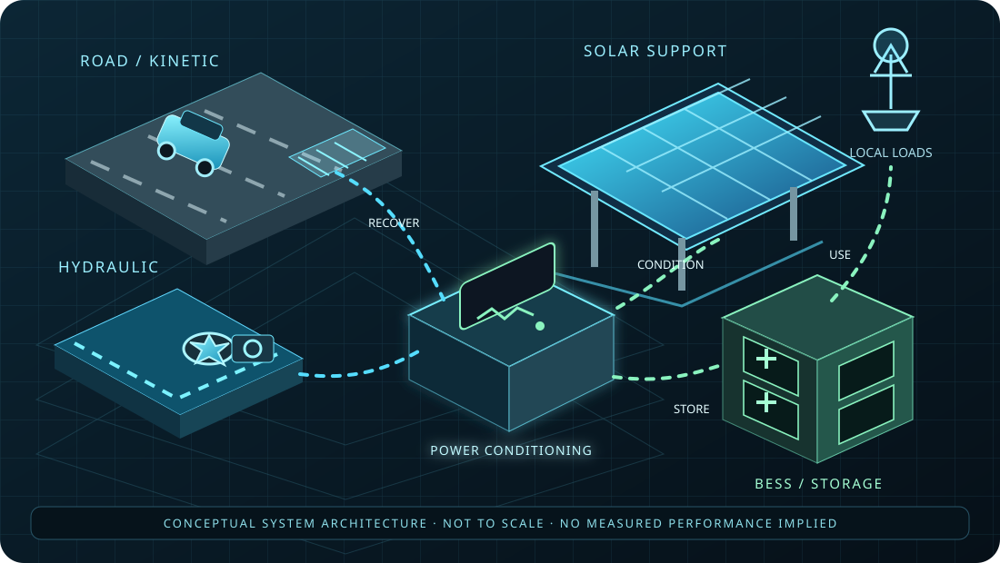
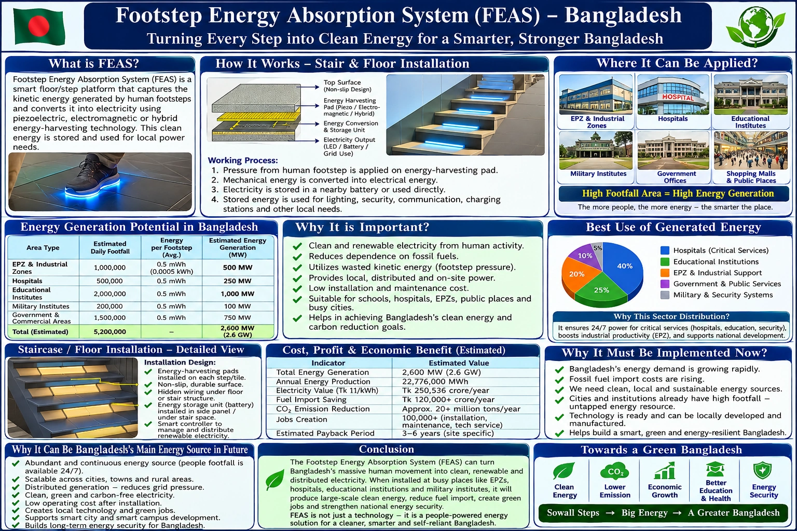
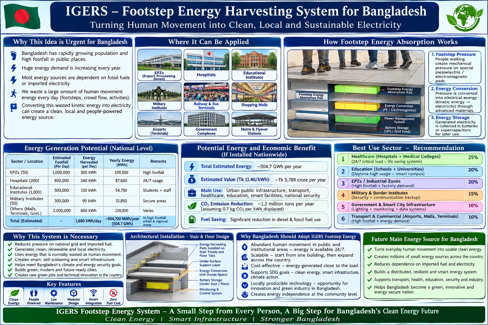

THE IDEA
Look where energy is already moving
Instead of depending only on new centralized generation, IGERS explores strategically selected recovery points inside existing infrastructure.
IGERS-BD-01 is an integrated concept for exploring distributed recovery of otherwise underutilized mechanical and environmental energy across transportation, infrastructure and selected environmental systems.
Available Energy ≠ Recoverable Energy. Every application needs separate engineering feasibility analysis.
Instead of depending only on new centralized generation, IGERS explores strategically selected recovery points inside existing infrastructure.
Recovered mechanical or environmental energy can be converted into electricity, conditioned, stored, monitored and routed to suitable nearby loads.
Speed, mass, elevation, flow, vibration, losses, structural constraints, safety, maintenance and economics all affect real output.
Explore four concept-stage engineering scenes: distributed inputs, a potential recovery mechanism, power conditioning, storage and local loads. These diagrams are explanatory, not fabrication drawings or proof of measured output.

LIVE CONCEPT SIMULATIONConceptual system architecture connecting selected source types through power conditioning to battery storage, monitoring and suitable local loads.
A live-style, adjustable concept demonstrator for pressure pad → transducer → power conditioning → storage → local load. All animated flows are illustrative; the calculated figures are model estimates, not measured field output.
Switch between the supplied thesis views while the right-side cutaway shows the conceptual energy route. This is an animated model view, not measured equipment output.

USER-SUPPLIED THESIS VISUALMODEL INTEGRITY The moving energy particles and illuminated battery are visual simulations. Numeric values are recalculated from the adjustable FEAS assumptions above; they are not actual hardware readings, a validated structural design, or proof that the infographic's national totals are achievable.
Emech (J/event) = F (N) × d (m)Eelectric (J/event) = Emech × ηEday (Wh) = Eelectric × N / 3600Pactive (W) = Eday / active hoursSimplified scenario model only. Actual FEAS output depends on force/displacement waveforms, transducer construction, electrical loading, rectifier losses, fatigue, footfall variation, weather, installation and measured prototype performance.

Mechanical energy associated with moving vehicles.
TransportRecovery opportunities during controlled deceleration.
KineticPotential energy associated with movement through elevation differences.
PotentialHydraulic or flow-based recovery where technically appropriate.
HydraulicSmall-scale mechanical recovery from suitable infrastructure.
MechanicalSmall-scale recovery from high-footfall environments.
Micro-energyRecovery from suitable airflow conditions and site geometry.
AerodynamicComplementary renewable energy for distributed node architecture.
PV supportOther site-specific mechanical interactions identified by survey and modelling.
Site-specificSensor data, operating state, power condition and maintenance status can be observed through an integrated dashboard.
Road lighting, signs, sensors, traffic systems, communication equipment, monitoring devices and emergency-support loads are conceptual examples.
Conceptual zones include moving traffic, braking areas, junctions, speed-control sections, elevation changes, roadside systems, solar-support structures and storage nodes.
Potential zones can include footfall, structural vibration, solar roof systems, auxiliary equipment and carefully evaluated mechanical interactions.
A water-flow turbine can be one technology card within IGERS, not the entire system. Hydraulic losses, flow constraints and civil safety must be analysed.
Solar + storage + recovery + sensing can support distributed low-power loads without implying replacement of conventional generation.
Mechanical, hydraulic, electromechanical, vibration, pressure/flow, aerodynamic and photovoltaic support can be combined where justified.
Land, mobile, coastal and infrastructure nodes can provide sensing, communications and local power resilience.
A central operations concept can monitor node health, communications, weather inputs, power state and maintenance events.
A controlled public network can publish weather, flood, cyclone, road and safety information without exposing protected operational systems.
Conceptual coordination / data-integration node.
Conceptual eastern-central aggregation node.
Conceptual coastal and maritime-weather aggregation node.
Highways, bridges, ports, critical infrastructure and disaster-response corridors.
This panel displays received ADS-B-derived aircraft states when the public provider is reachable. It does not fabricate aircraft positions. Coverage varies by receiver network and aircraft visibility.
Individual source-verified toll-plaza models, national flow visualization, hourly traffic seismograph, authorized live-data connector and official RHD/BBA report links.
Green = live/authorized feed. Gold = official reference locator. The panel never invents a live national count when a provider is unavailable.
Stored locally from observed/authorized flow. Simulation is clearly marked and never presented as live.
| Source | Mode | Status |
|---|---|---|
| RHD Traffic Insight | 24/48-hour reports | Official web source |
| RHD Online Road Network | LRP/toll registry | Official web source |
| Authorized Toll/ITS feed | Live JSON | Not configured |
| BBA public site | Authority reference | Official web source |
A live connection/status layer for public orbital-element data. It does not claim spacecraft telemetry or Earth-imaging capability.
A read-only public/authorized-data early-warning console. The 3D scope, satellite imagery and coverage rings are visualization layers; they do not control weapons or represent an operational interceptor network.
A defensive, public-data anomaly layer beside the live aircraft system. It flags unverified ADS-B anomalies only; it does not confirm missiles, hostile intent or military threats.
The monitor is waiting for the live ADS-B feed and will show an unverified notice only when a defined public-data anomaly heuristic is met.
Authentic Bangladesh ADM0 geography with a defensive monitoring overlay. Public/authorized data is displayed read-only; virtual network nodes are illustrative and are not actual mobile-tower locations.
Visualizes public ADS-B tracks inside the approximate Bangladesh view. It is a radar-style display, not a military radar feed.
Public ADS-B-derived positions are projected into a 3D globe. The existing Airplanes.live map remains intact; this panel adds an independent 3D analysis view and flight-detail monitor.
Select an airport to inspect its runway reference and animate taxi, landing or takeoff. The animated airport-to-airport route is an illustrative simulation, not a prediction of a real flight path.
Mount your own authorized Google Maps 3D map inside the app. No key is bundled with this ZIP.
Global earthquake events from the USGS all-hour feed are overlaid on a reference plate-boundary model. Alerts are screening notices, not an official Japan Meteorological Agency early-warning system.
Public marine-model data for selected Bangladesh coastal points: sea level, wave height, sea-surface temperature and ocean-current state. This is an environmental monitor, not military/naval radar access.
Separate scenario calculator for the IGERS-BD-01 architecture: roadway recovery, hydraulic recovery, PV generation and battery autonomy. Results are explicitly scenario-based.
A non-operational model showing distributed network-node status, browser connectivity and maintenance actions. Buttons here do not switch real telecom, cellular, satellite or defence hardware.
Prayer times are requested from a public prayer-time service using browser location (or Dhaka fallback). Qibla is calculated geometrically toward the Kaaba.
Local-browser administrator console for creating an on-screen evacuation message, direction cue and notification test. Real public emergency broadcasting requires a secured backend and authorized alert provider.
Depth-rendered atmosphere · forecast stream · environmental telemetry
Weather data is loaded from the browser through a public weather endpoint.
Integrated Gradient-Based Energy Recovery and Storage System
The website presents IGERS as a research concept. Real deployment requires site-specific engineering, safety review, approvals, testing and measured performance.
Survey the site, quantify available energy, model recovery losses and confirm structural compatibility before fabrication.
Traffic, water, electrical systems, batteries, moving components and environmental conditions require dedicated safety controls.
Concept-stage calculations are preliminary. Prototype measurements should replace assumptions before performance or profitability claims are published.
A polished developer-demo interface for visitor comments, suggestions and support messages—without expanding the information collected.
Only an email address and your message are requested. No name, phone number, location, account or other personal profile fields are collected by this demo module.
Messages saved on this browser/device appear here for demonstration and UI testing.
Live engineering model using the current IGERS roadway reference assumptions. Values are illustrative until replaced by measured field data.
Moderated analytics from the app's existing live indicators, counters and provider states. No synthetic provider readings are presented as real telemetry.
Administrative prototype control for the website's simulated machine and future systems. Live public-data panels remain read-only displays.
Login as administrator to change prototype system-control state.
One workspace for current application state, source freshness, map context and alerts. Values are read from existing panels; missing provider data stays unknown rather than being invented.
Observed state, source hint, and age are shown where the current app exposes them.
Alerts are derived from errors, offline state or stale observations found in this browser session.
Bundled geographic boundary and river layers, listed airport reference locations, and public aircraft coordinates only when available in the existing ADS-B payload.
Use transparent physics-based models, export a reproducible snapshot, pin frequent panels, and practise with scenarios explicitly marked as simulations.
Choose a model and change the assumptions. Output is calculated from your inputs, not measured site telemetry.
Export current status observations and model assumptions for review.
Saved locally in this browser only. Existing navigation destinations remain unchanged.
Visual practice scenarios are explicitly simulated and do not command real aircraft, sensors or energy hardware.
Check the current client environment, app resources, offline readiness, install options and local UI audit trail before sharing or deploying an update.
Browser-run structural checks. A present file is not the same as a verified external service.
Use browser-supported PWA installation where available. This panel does not claim an APK exists.
Prototype activity records stay in this browser only. This is not a secure server-side administrator audit.
Check connection and installed mode, then reduce decorative motion on this device if preferred.
Digital-twin concepts, projects, hardware telemetry, site screening, commissioning, procurement, maintenance, commercial models, safety and client workflows in one workspace.
Animated flow is a visual concept model. It is not connected to physical equipment unless verified telemetry is shown in the Hardware / IoT tab.
Choose a physical model, enter your own engineering assumptions, and compare an optional field/reference measurement. Outputs are model estimates—not a guarantee of recoverable energy.
Road energy is reported as kWh/event and kWh/year. Hydraulic/wind power uses watts or kilowatts; solar uses specific-yield assumptions. Simplified wind estimates do not account for the complete wind-speed distribution or site turbulence. Have a qualified engineer validate inputs and losses before design decisions.
Browser-local records work immediately. Sign in to a configured backend to synchronise records across users/devices.
Connects to a separately deployed, authenticated backend. No sample measurements are inserted into this table.
Static-only/local mode until an API URL is configured.
Device reports are labelled unverified until sensor identity, calibration and installation are checked independently. Posting telemetry requires a device token configured on the gateway, never in the public webpage.
Checks input completeness and produces preliminary resource calculations. It does not certify a site as feasible or replace a survey.
Complete a site form to calculate which required inputs remain unavailable.
A high completeness score is not an approval. Hydraulic survey, environmental impact, road safety, grid interconnection and civil/structural assessment still require qualified review.
Record design, fabrication, laboratory tests, field trial, approval evidence and responsible reviewers.
Inventory and costs are internal planning records. Supplier, price and availability are not externally verified.
Alerts here are task records, not autonomous predictions. Predictive analytics require a verified historical sensor dataset.
Use measured/approved annual energy where available. Estimates remain scenario-based and depend on user-entered tariff, emissions factor, costs and lifetime.
Enter all scenario assumptions to calculate. No default company financial figures are assumed.
Carbon result is a theoretical avoided-emissions estimate only, not a verified reduction, offset or carbon credit.
Checklist completion is self-reported and does not replace a permit, formal risk assessment or qualified safety sign-off.
Store revision references and work assignments. Actual CAD/source files should remain in controlled document storage; this panel stores their metadata and links.
Admin passwords are sent only to the configured HTTPS backend for login. The webpage never stores the password; a short-lived session token remains in sessionStorage.
Backend credentials are not prefilled or embedded in this site.
The static site cannot run Python itself. A separately deployed API and its environment variables are required for shared cloud records and real device telemetry. Never commit API tokens or passwords to GitHub.